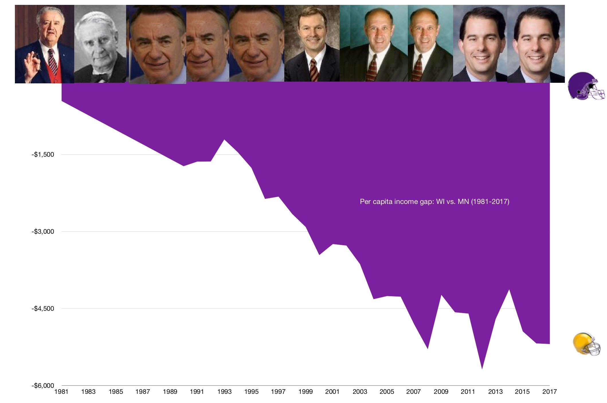
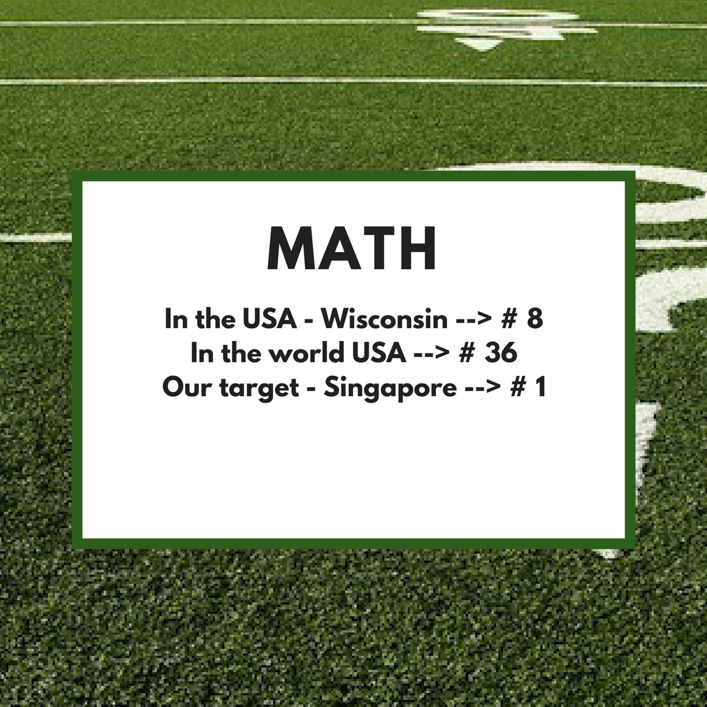
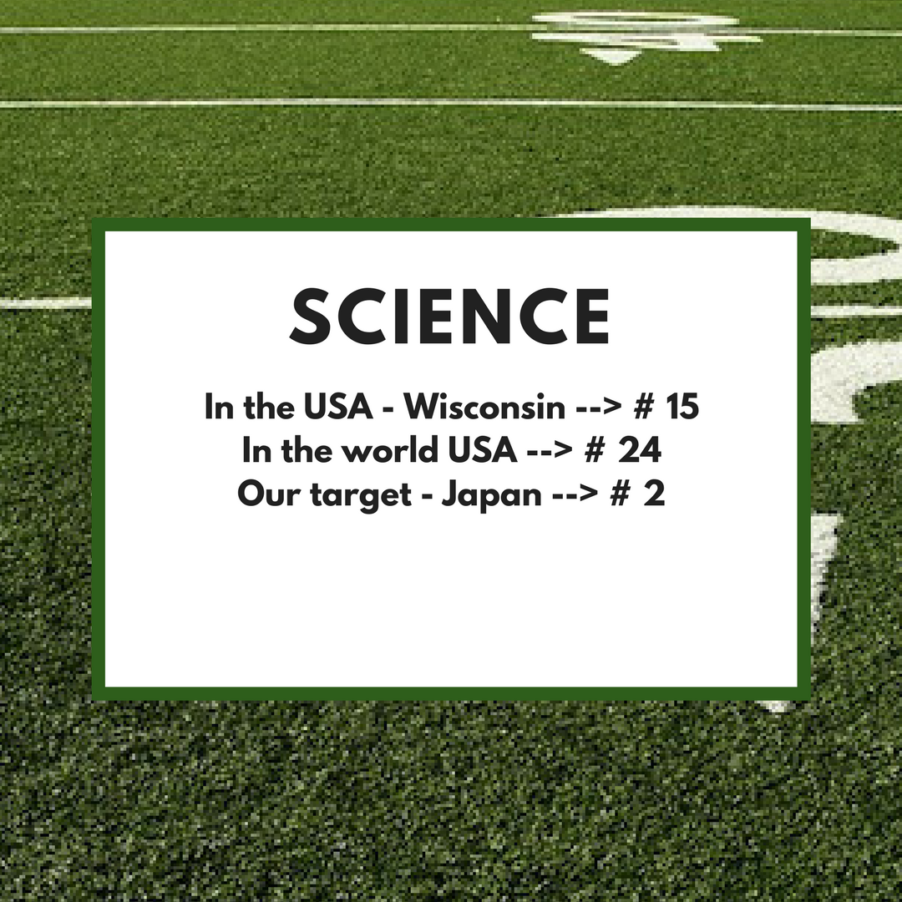

“Expect much more, Wisconsin!”
BIPARTISAN TWO STRETCH TARGETS THAT WILL MAKE OR BREAK OUR CHILDREN AND GRANDCHILREN'S QUALITY OF LIFE…AND MAYBE OUR OWN!
ONE. WISCONSIN PER CAPITA INCOME TO BE 10% ABOVE MINNESOTA'S BY 2038!
TWO. WISCONSIN MATH, SCIENCE, & READING -15 YEAR OLD SCORES TO BE IN THE TOP 10 GLOBALLY BY 2038!
Dave Baskerville (International Business) on Channel 3000 News 3 : For The Record
PROBLEM
Over the last 38 years Wisconsin has fallen significantly behind, both economically and scholastically.
GOALS
Wisconsin citizens need to adopt two bipartisan, aggressive long-term goals to address this situation; and to ‘grassroots’ pressure our leaders to act accordingly!.
PURPOSE OF THIS WEBSITE
This website provides an easily understandable scorecard twice a year showing the progress towards these two “Stretch Targets.”
Our Mission
To enable Wisconsinites to realize substantially increased real income and considerably more opportunity for advancing their hopes and dreams.
STRETCH TARGET # ONE. WISCONSIN PER CAPITA INCOME WILL BE 10% ABOVE MINNESOTA'S BY 2037!

For over 38 years, Minnesota’s economy has been much stronger than ours in Wisconsin! Why compare with Minnesota? True, the economies of the two states have some historic and fundamental differences. But Minnesota and Wisconsin are demographically similar. We love to compete against the Gophers/Vikings. Why not on jobs? Since at least 1980, we have been losing to them. Yes, in that year, MN which was #19 surpassed #18 WI for the first time. TODAY, Minnesota is # 11 and generates $4900 per capita more than #24 Wisconsin.
STRETCH TARGET # TWO. WISCONSIN MATH, SCIENCE & READING
15 YEAR OLD SCORES WILL BE IN THE TOP 10 GLOBALLY BY 2037!
For at least two generations, American K-12 education has been slipping. Though Wisconsin does OK in national ratings, our nation (& State) comes in dismally low when compared to the student achievement levels of most other First World and some Emerging Nations. That means that our workforce under age 55 has trouble competing in our global world. And means general citizenry participation, leadership in many fields and social mobility suffer.
Share This With Legislators & Other Public Servants
We have a set of concrete action points that you now can put in the hands of your candidates & Legislators & Governor when asked: “Well, what do you want me to do with this Stretch Targets?”


Sign up
Why sign up? Simply to receive 2x per year this Scorecard to keep you updated on Wisconsin's progress vs. the USA and world and to provide you with an easy yet informed, intentional way to make your concern known to our leaders. Nothing else!